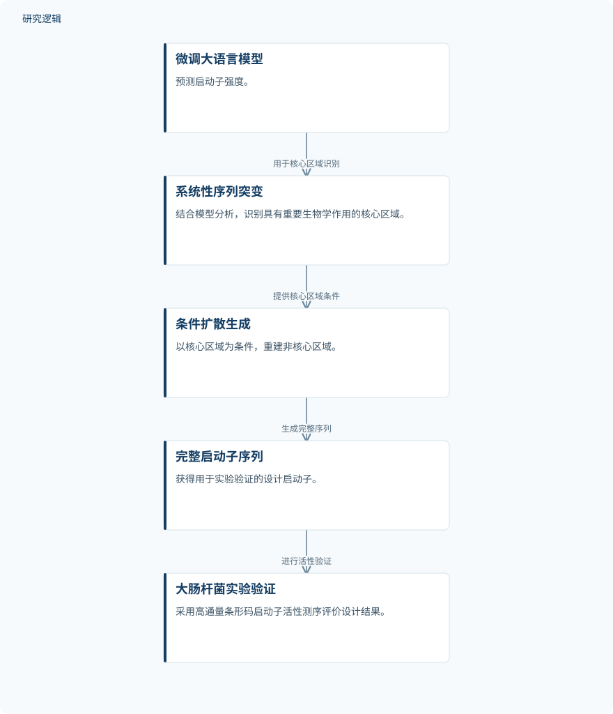

摘要解读
融合大语言模型与扩散模型的启动子理性设计框架
A Hybrid Large Language Model and Diffusion Framework for Rational Promoter Design
解读更新 2026-10-21 22:23 · 依据公开摘要整理，未核验全文细节
如何在庞大的序列组合空间中，设计出表达能力更强的启动子？这项研究将大语言模型的强度预测与核心区域识别，同扩散模型的序列生成相连接，并在大肠杆菌中验证设计结果，为理解“可解释性如何参与生成设计”提供了具体案例。
文章目录
启动子设计：从庞大序列空间寻找高性能候选
高性能启动子是精确调控基因表达的重要工具，但序列组合空间庞大，使其理性设计面临挑战。本文关注的不只是预测已有启动子的强弱，还包括如何利用模型识别的信息，指导完整启动子序列的生成。
先识别核心区域，再以核心区域约束生成
研究首先利用微调后的大语言模型预测启动子强度，并通过系统性序列突变识别具有重要生物学作用的核心区域。随后，扩散模型以这些核心区域为条件，重建非核心区域，生成完整启动子序列。这里的关键连接是：序列分析得到的核心区域，成为后续生成过程的条件。
生成结果通过大肠杆菌中的高通量条形码启动子活性测序进行实验验证。摘要明确了验证对象和测量方式，但没有展开模型训练、核心区域判定及生成过程的具体配置。
依据摘要整理的启动子设计与验证流程


仅概括摘要明确报告的方法关系与验证环节，不是论文原图，不表示未报告的实验配置。
下载 SVG图示关系说明
实线表示相邻阶段的信息流，虚线表示跨阶段联系或反馈。
微调大语言模型 → 系统性序列突变：用于核心区域识别；系统性序列突变 → 条件扩散生成：提供核心区域条件；条件扩散生成 → 完整启动子序列：生成完整序列；完整启动子序列 → 大肠杆菌实验验证：进行活性验证
部分设计超过基准，最佳变体达到约2.5倍表达
摘要报告，7.78%的设计启动子表现优于基准启动子BBa_J23119，最佳变体的表达水平达到该基准的约2.5倍。这说明该流程确实产生了超过所选基准的候选，但不能将最佳变体的表现理解为全部设计序列的普遍增益。
对于预测环节，摘要称微调后的大语言模型具有较高准确性，但未给出具体评价指标。作者将整体策略概括为可解释性与生成设计的显式结合；其向其他调控序列工程任务的适配，仍是摘要提出的潜在用途，而非已经报告的验证成果。
命中比例之外，样本规模与比较范围仍待核对
仅凭摘要，无法判断训练与测试数据规模、实验验证的序列总数、重复设置及统计不确定性。摘要给出了相对BBa_J23119的结果，但不足以判断该框架相对其他设计方法的优势，也无法确定不同培养条件或其他宿主中的适用性。这些属于当前资料无法回答的问题，不代表论文没有开展相关工作。
阅读启发：解释信息是否真正帮助了生成
阅读启发：对生成式设计读者而言，值得关注的是“识别关键区域，再将其作为生成条件”的组织方式。进一步阅读时，可重点核对核心区域的判定依据，以及相关比较能否说明这些条件对生成结果的实际贡献。本文摘要支持提出这一问题，但不足以推断该思路已适用于结构设计、可靠性优化或智能运维。
以上为本站阅读启发与建议，不是论文已验证的结论。